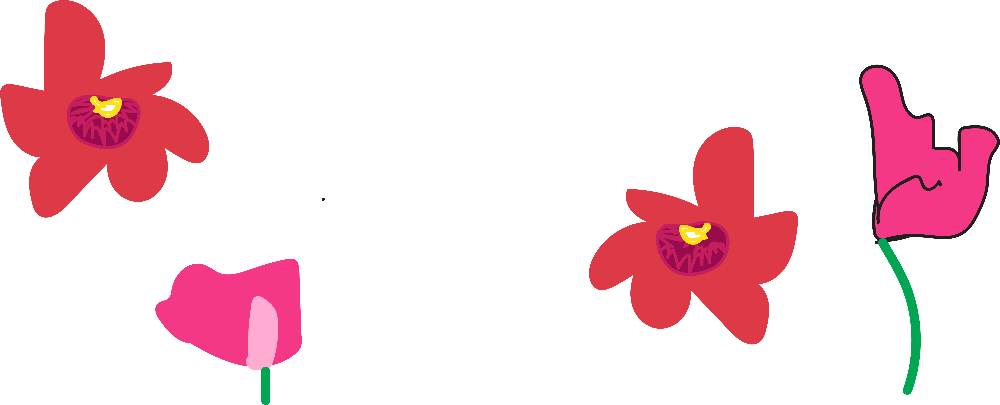

About the Artist
Works of Illustration
Interview with Wendy
On the Meditative Power of Drawing

Wendy Hollender is a botanical artist, illustrator, author, and instructor. Her illustrations have been widely published and her work has been included in the 13th International Exhibition at Hunt Institute for Botanical Documentation and in exhibitions at the Royal Botanical Gardens, Kew, and the Smithsonian National Museum for Natural History.
